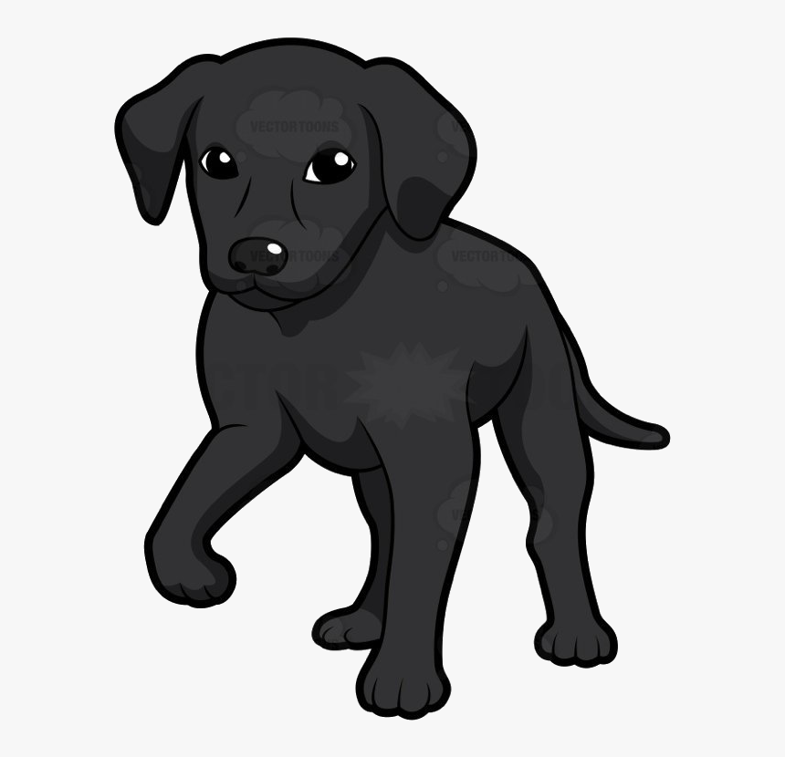
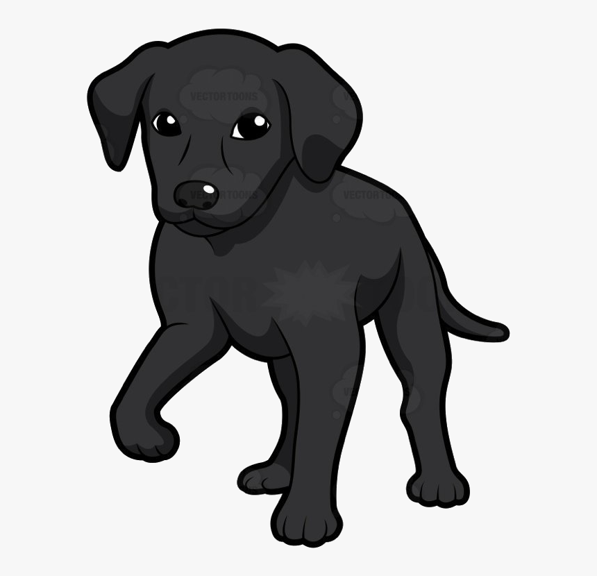
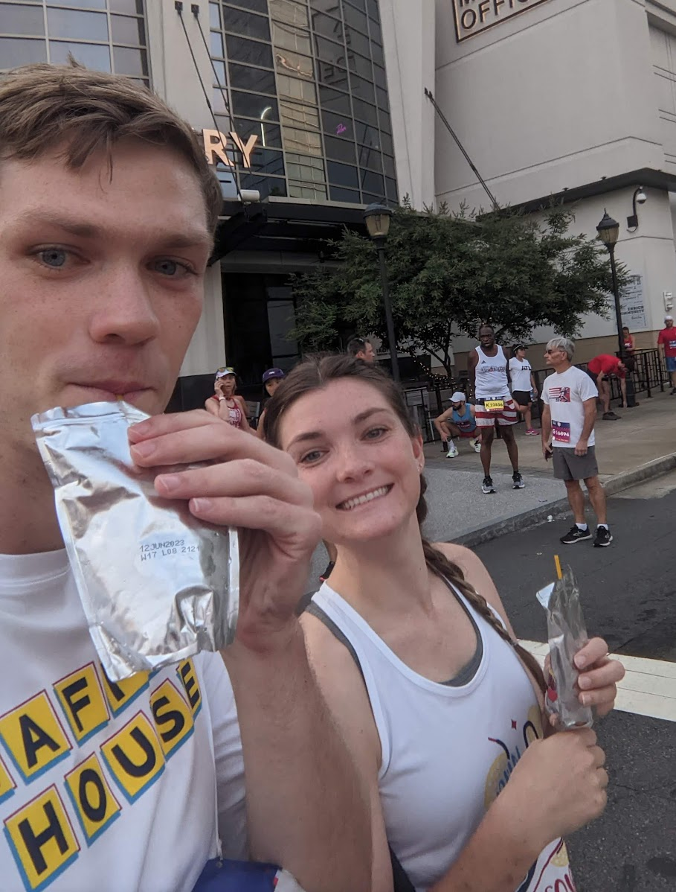
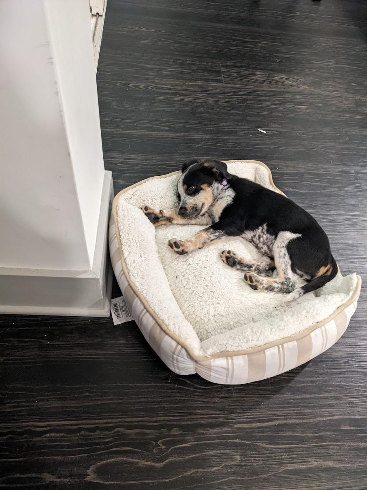
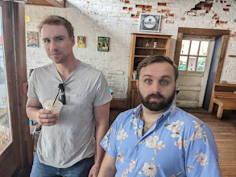

Hi Leah!

Hi Leah!


"woof"
[translated: Greetings Leah!
Let me start with a parable: There are these two young fish swimming along and they happen to meet an older fish swimming the other way, who nods at them and says “Morning, boys. How’s the water?” And the two young fish swim on for a bit, and then eventually one of them looks over at the other and goes “What the hell is water?
The plain fact is that most people do not yet have any clue what “day in day out” really means. There happen to be whole, large parts of adult American life that most pups don't talk about. One such part involves boredom, routine and petty frustration.
By way of example, let’s say it’s an average pup day, and you get up in the morning, walk downstairs to your average, dry bowl of dog food. Your owner leaves for the day, you sneak out to your dog job and you sit in boredom for eight or ten hours, and at the end of the day you’re tired and somewhat stressed and all you want is to go home and have a good supper of more dry dog food and maybe unwind for an hour with some fetch, and then hit the sack early because, of course, you have to get up the next day and do it all again. But then you remember there’s no food at home. Your owner didn't feed you.You haven’t had time to shop this week because of your challenging job, and so now after work you have to bark at your owner until they feed you. But they have no food and need to go to the grocery store. It’s the end of the work day and the traffic is apt to be: very bad. So getting to the store takes way longer than it should, and when you finally get there, the supermarket is very crowded, because of course it’s the time of day when all the other dogs with jobs also try to squeeze in some grocery shopping. And the store is hideously lit and infused with soul-killing muzak or corporate pop and it’s pretty much the last place you want to be but you can’t just get in and quickly out; you have to wander all over the huge, over-lit store’s confusing aisles to find the stuff you want and you have to manoeuvre your junky cart through all these other tired, hurried people with carts (et cetera, et cetera, cutting stuff out because this is a long ceremony) and eventually you get all your supper supplies, except now it turns out there aren’t enough check-out lanes open even though it’s the end-of-the-day rush. So the checkout line is incredibly long, which is stupid and infuriating. But you can’t take your frustration out on the frantic lady working the register, who is overworked at a job whose daily tedium and meaninglessness surpasses the imagination of any of us dogs.
But most days, if you’re aware enough to give yourself a choice, you can choose to look differently at this fat, dead-eyed, over-made-up lady who just screamed at her kid in the checkout line. If you really learn how to pay attention, then you will know there are other options. It will actually be within your power to experience a crowded, hot, slow, consumer-hell type situation as not only meaningful, but sacred, on fire with the same force that made the stars: love, fellowship, the mystical oneness of all things deep down.
Jake reminds me that the real value in life has almost nothing to do with knowledge or wealth or power, and everything to do with simple awareness; awareness of what is so real and essential. What is so hidden in plain sight all around us, all the time, that we have to keep reminding ourselves over and over:
“This is water.”
It is unimaginably hard to do this, to stay conscious and alive in the adult world day in and day out.
Jake is the one who reminds me. The really important kind of freedom involves attention and awareness and discipline, and being able truly to care about other people and to sacrifice for them over and over in myriad petty, unsexy ways every day.
Jake is my hero. I am just a young pup but every day I wake up and ask myself, "how can I be more like Jake." And I like to think some days Jake wakes up and asks himself the same.] - Emmy (Dog)

I lived with Jake for 4 years and he never killed me - Grant (Friend)
Jake is a decent dude - Graham (Friend)
Jake is maybe a serial killer. Avoid him at all costs